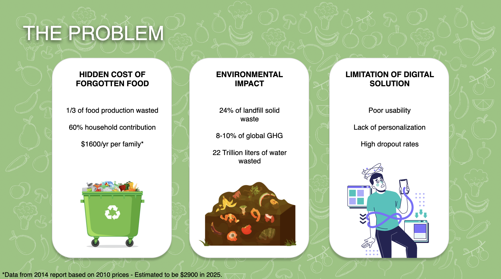
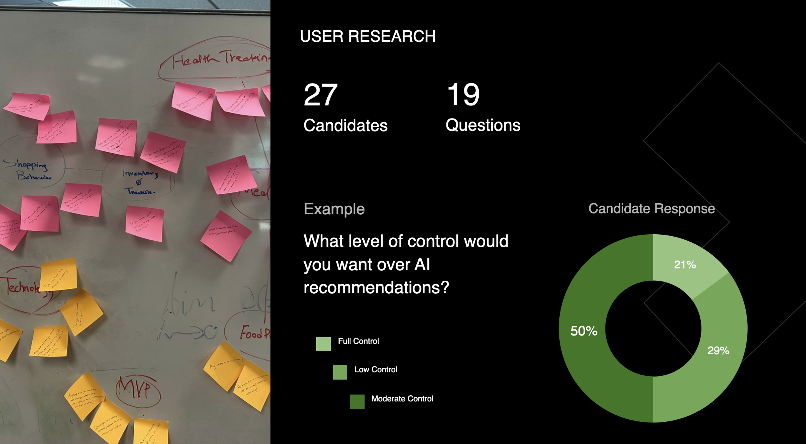
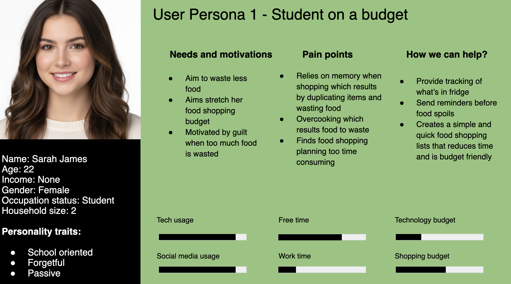
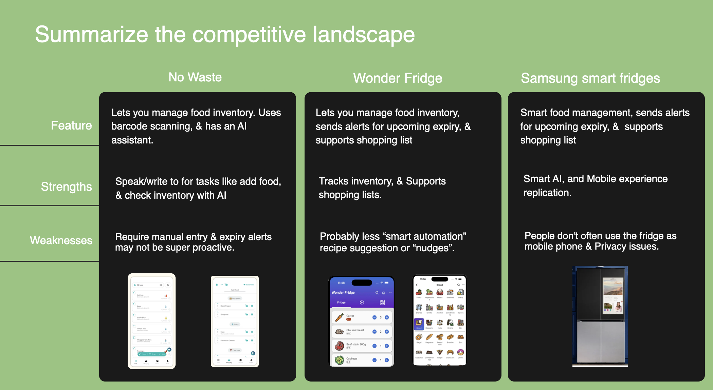
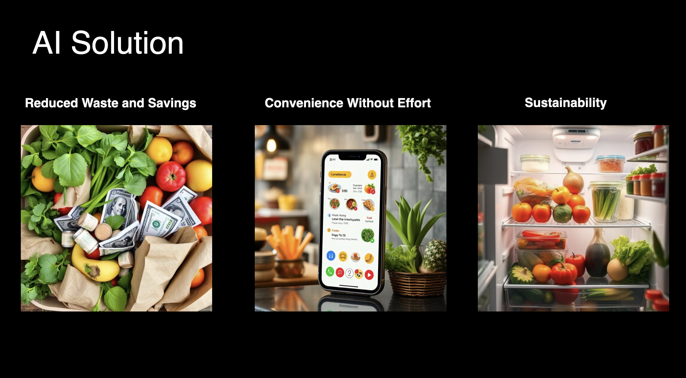
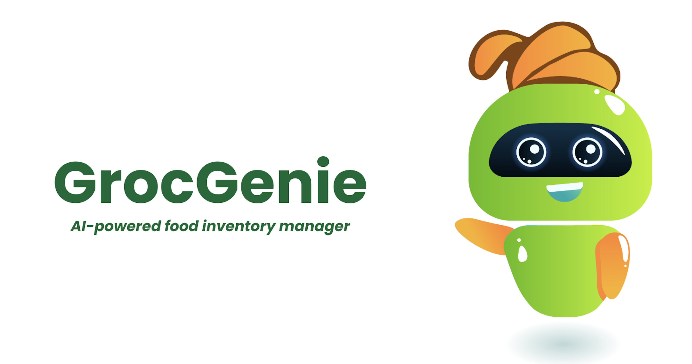

Our discovery phase analysed busy students and families to understand why existing manual grocery trackers consistently fail. The finding: food waste is a byproduct of cognitive overload, not carelessness. Nobody is throwing away food because they don't care about waste, they're throwing it away because the mental overhead of tracking inventory is higher than the emotional cost of the loss.
Once items are pushed to the back of the fridge, they effectively "cease to exist" in the user's mind. Out of sight, out of mind, and into the bin. Users consistently described discovering forgotten items only when they began to smell.
Users find the "Manual Log" barrier too high for everyday items like milk or kale. Any friction in the logging process, even a single extra tap, causes abandonment. Every existing food tracking app we tested charged this tax.
A critical finding: users feared cloud-based kitchen cameras deeply. Multiple participants said they "would never allow a camera in their home connected to a server." This led us to a Local-First data strategy, all camera processing happens on-device, nothing uploaded to a server.


Anthony lives alone in a one-bedroom apartment near campus. He does one big grocery shop every Sunday, spending around $80–$90 at Meijer. He genuinely cares about sustainability, he composts, uses reusable bags, and buys local when he can. But by Thursday, a third of his weekly shop is in the compost bin. He feels guilty every single time.
Sunday 2pm. Anthony does his weekly Meijer run: salad mix, kale, chicken thighs, Greek yogurt, eggs, and a bag of apples. He's optimistic, "I'll actually cook this week." He gets home and puts everything away.
😊 Optimistic, good intentions in placeMonday and Tuesday: back-to-back seminars, a paper deadline, and a lab session that runs three hours over. Anthony eats granola bars and orders DoorDash twice. The fridge stays closed.
😤 Overwhelmed, cooking feels impossibleThursday evening. Anthony opens the fridge to make dinner and finds the salad mix is slimy and the kale has yellowed. He checks the chicken, still okay but needs to be cooked tonight. He didn't even remember the kale was there.
😔 Guilty & frustrated, $15 in the bin againHe throws away the salad and kale, cooks the chicken, and tells himself he'll do better next week. He considers downloading a grocery tracking app but doesn't, the manual logging feels like more work than the problem is worth.
😶 Resigned, the cycle will repeatMapping Anthony's full weekly cycle, from hopeful Sunday shop to guilty Thursday bin, reveals that the intervention point isn't Sunday. It's Tuesday. By the time Thursday arrives, the food is already lost. GrocGenie needs to intervene before the spiral starts.
Shops optimistically, buys fresh produce for the week
Organises fridge by what fits, not by expiry date
"I'll definitely cook this week." He means it.
Back-to-back classes and a paper deadline
Orders food delivery, "just tonight"
Fridge stays closed. Salad clock ticking.
The GrocGenie intervention point, a nudge could save the salad
"Your salad mix expires tomorrow, here's a 10-min recipe"
Without the nudge: the opportunity passes silently
Opens fridge and discovers slimy salad
Kale is yellowed, didn't remember it was there
Chicken cooked. Two items binned.
Goes back to Meijer, "I'll do better this week"
Buys similar items. Cycle resets.
Without GrocGenie: this repeats indefinitely
GrocGenie's design mandate: intercept on Wednesday, not Thursday. Proactive expiry nudges + AI recipe suggestions change the outcome before the food is lost, not after.

Instead of designing an autonomous system that monitors the user's kitchen, we designed a Collaborative Agent, an AI that intervenes at the right moments and yields control everywhere else. We applied two of Microsoft's Human-AI Interaction Guidelines specifically to address Anthony's surveillance anxiety:
Every AI feature clearly communicates its capabilities and limitations upfront. The camera's on-device processing is disclosed prominently, not buried in a privacy policy. Anthony always knows what the AI can see and what it cannot.
Every AI action includes a brief, plain-language explanation. "This item was flagged because it was detected in your last scan and its typical shelf life is 5 days, you're now on day 4." Transparency builds lasting trust far more effectively than accuracy alone.
We storyboarded "Anthony's GrocGenie Week" to map exactly where the AI should intervene (expiry warnings, duplicate detection, recipe suggestions) and where it should yield control (editing the grocery list, overriding recommendations, deleting AI-added items).

Task analysis focused on the "Duplicate Warning" and "Expiry Prediction" flows, the two highest-stakes AI moments where errors feel most frustrating. The key design question: how do we make an AI error feel recoverable rather than catastrophic?
Low-profile UI cues show how "sure" the AI is about a scan, 87% confident vs. 43% confident. Users know when to trust and when to verify. Uncertainty is visible, not hidden behind a confident-sounding result.
A thumbnail of what the camera saw lets users verify the AI's logic before accepting a scan. "Is this the kale or the bok choy?", the user can see the image and correct it. Reduces errors and builds genuine system trust.
The user can always delete an AI-added item, correct a miscategorisation, or override an expiry estimate, even after the AI has acted. Explicit user agency is non-negotiable at every step of the flow.
A persistent, prominent indicator confirms that all camera processing happens on-device. Not a one-time onboarding disclosure, a continuous signal that reassures Anthony every single time he scans his fridge.
The design principle was simple: if trust is the product, trust has to be visible. Confidence scores, the local-only processing badge and one-tap override controls were specified front-and-centre, not buried in settings, so the interface reassures the user at the exact moment it asks something of them.

Multi-metric evaluation across Usability, Desirability, and Explainability, the dimension uniquely relevant to HCAI systems. Users completed complex tasks, like finding items expiring in exactly two days using the AI assistant, to test whether they genuinely trusted the system or were just complying with it.
The original design included a feature showing estimated monthly food spend. In testing, users described it as invasive and anxiety-inducing, it surfaced guilt without actionable direction. "It just tells me I'm spending too much. So what?"
Shifted to a "Savings Progress" metric, how much food cost was prevented this week by acting on AI suggestions. Reframes the same financial information as positive achievement rather than negative audit. Users felt motivated, not surveilled.
Early prototypes showed AI scan results without confidence indicators. Users accepted them uncritically, or rejected them entirely when wrong, losing all trust in the system.
Confidence percentage shown per item, with a one-tap correction flow. Users who corrected an error reported higher trust in subsequent scans, the ability to correct the AI made the AI feel more trustworthy, not less.
GrocGenie proved that the hardest problem in Human-AI Interaction design isn't accuracy, it's the perception of trustworthiness. An AI that's 95% accurate but opaque about its reasoning generates less user trust than an AI that's 82% accurate but explains itself clearly. The lesson: trust is a design outcome, not just a technical one.
Happy to talk through the confidence-indicator system, the local-first privacy architecture, and how two rounds of testing reshaped the savings metric.